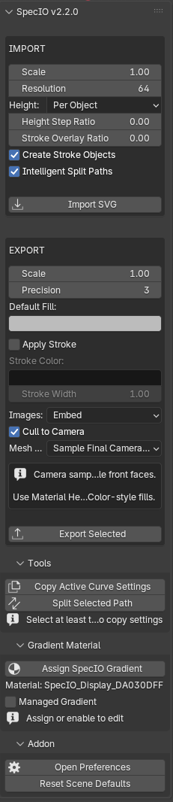
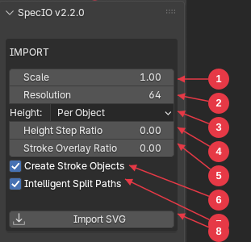
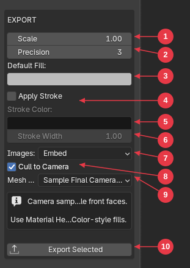
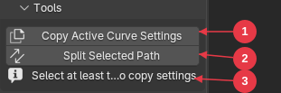
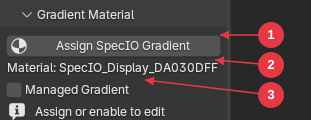
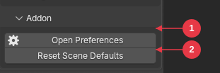

Created by Anthony Aragues
Created by Anthony Aragues
SpecIO is a Blender 5.1+ extension for importing and exporting SVG files. Bring vector artwork into Blender as editable curves, text, and image planes — and write Blender curves, text, image planes, and even camera-view 3D scenes back out as clean SVG.

Edit > Preferences > Extensions.N to open the sidebar. Click the SVG tab. The panel header reads SpecIO v<version>.Import SVG and choose a .svg file. Imported geometry appears as Blender curves, text objects, and image planes inside a collection named <filename>_SVG.Export Selected in the EXPORT section.Numpad 0), select the meshes, and click Export Selected.SpecIO requires Blender 5.1.0 or newer. It does not install in older Blender versions.
Operating systems: Windows, macOS, and Linux. Windows is the primary validated platform.
.zip.zip (release artifact or your own build).Edit > Preferences > Extensions.Install from Disk.....zip file.N to open the sidebar.SpecIO v2.2.0 (or your installed version).If the SVG tab is missing, return to Edit > Preferences > Extensions, search for “SpecIO”, and confirm the checkbox is enabled.
Edit > Preferences > Extensions, find SpecIO.Disabling does not delete imported curves, text, image planes, or assigned gradient materials from any saved .blend file. Re-enabling SpecIO restores the panel and you can keep working with previously imported objects.
All SpecIO controls live in the 3D Viewport’s N-panel sidebar, under the SVG tab. Press N in the 3D Viewport to toggle it.
The tab contains a single panel whose title shows the addon version (e.g. SpecIO v2.2.0). Inside it are two boxed action sections — IMPORT and EXPORT — drawn in the main panel itself, plus three collapsible sub-panels below:
| Section | Where | Purpose |
|---|---|---|
| IMPORT | Boxed section in the main panel | Import-time settings + the Import SVG button |
| EXPORT | Boxed section in the main panel | Export-time settings + the Export Selected button |
| Tools | Sub-panel | Curve utilities: Copy Active Curve Settings, Split Selected Path |
| Gradient Material | Sub-panel | Assign and edit SpecIO-managed SVG gradients on the active curve |
| Addon | Sub-panel | Open addon preferences and reset per-scene settings |
The Tools, Gradient Material, and Addon sub-panels are collapsed by default. Click a sub-panel header to expand or collapse it.
The sidebar is only visible in Object Mode. It does not appear in Edit, Sculpt, or Pose mode.
A boxed section at the top of the main panel.

Flat, Per Object, Per Layer)..svg file to import.Note:
Height Step RatioandStroke Overlay Ratiodefault to0.001but display as0.00in the panel because Blender rounds float displays to two decimals. The underlying value is what the importer uses.
A boxed section below IMPORT.

Embed (base64 inline) or Link (relative file path) for raster image export.Material Heuristic (use Base Color directly) or Sample Final Camera Color (render Eevee and sample the lit color per face). When Sample Final Camera Color is selected, an info box appears warning that camera sampling keeps only visible front faces..svg path.

If no curve is selected, only the Assign SpecIO Gradient button is shown. The full gradient editor (color stops, geometry, spread mode) only appears when a managed gradient is enabled — see §6 Managed Gradient Workflow for the editor in detail.

The Import SVG action reads a .svg file and creates Blender objects in a new collection named <filename>_SVG. The collection is added under the active scene collection.
.svg file in the file browser. Click Import SVG to confirm.When the import succeeds, the newly created objects are selected and the first one becomes the active object. A success message appears in the status bar. On failure, an error message starting with “Failed to import SVG:” is reported and nothing is created.
A single Ctrl+Z after import removes everything the import created.
| SVG element | Becomes |
|---|---|
<svg>, <g> |
Blender collections (group hierarchy is preserved) |
<rect>, <circle>, <ellipse>, <line>, <polyline>, <polygon>, <path> |
Blender curve objects |
<text> |
Blender text objects |
<image> (local file or embedded data) |
Blender mesh planes with the image as a texture |
<linearGradient>, <radialGradient> |
Blender materials with a node-based preview |
<use> referencing a local element/group/symbol |
Inline-expanded clones of the referenced content |
Hidden elements (display:none, visibility:hidden) |
Skipped entirely |
Element groups become Blender collections. SVG id attributes are preserved as collection and object names where valid. When an id is missing, SpecIO assigns a stable fallback name (path_1, group_2, etc.) so re-imports are predictable.
style="...", inherited styles, and CSS <style> blocks.display:none, visibility:hidden, or fill:none + stroke:none).translate, scale, rotate, matrix, skewX/Y) including nested group transforms.When a shape has both a fill and a stroke, SpecIO can create two Blender objects for it: the fill object and a stroke helper object placed slightly below the fill in Z. This keeps fill and stroke independently editable. Turn off Create Stroke Objects to disable.
These live in the IMPORT section of the SVG sidebar.
Multiplier from SVG user units to Blender units. Default 1.0. Range 0.001 to 1000.0.
A 100×100 SVG drawn at scale 1.0 becomes 100 Blender units wide. Use 0.01 to map an SVG to roughly metric centimeters in a small scene.
Default 64. Reserved field; carried through but not currently used for spline subdivision (paths are constructed from real Bezier handles).
Default: Per Object.
The Z step used by Per Object and Per Layer, expressed as a fraction of the SVG document’s largest dimension. Default 0.001 (about 0.1%).
Set to 0.0 to keep all objects on the same plane while still using the stacking mode field for layout intent.
Z clearance between a fill object and its stroke helper. Same units as Height Step Ratio. Default 0.001.
This puts the stroke helper slightly below the fill so it shows behind the fill outline, matching SVG’s draw-order convention.
When on (default), shapes with both fill and stroke import as two Blender objects: the fill curve and a stroke helper named <id>_stroke.
When off, only the fill object is created and the stroke style is dropped at import time. Turn this off if your SVG has many fills+strokes and you only need fill geometry, or if stroke duplicates clutter your outliner.
When on (default), the importer analyzes complex paths with holes and may split them into separate Blender objects per contour family, so each closed region renders correctly as a fill instead of getting confused by hole/outer-ring nesting.
When off, every SVG <path> becomes exactly one Blender curve object with all its splines preserved literally. Disable this if you want the simplest possible 1:1 element mapping at the cost of correct rendering of compound fills.
The same logic powers the manual Split Selected Path tool — see Tools.
See SVG Support for the full list. Highlights:
<image href="http://..."> (and https://, ftp://) are skipped for security. Local files and data: URIs work.<script> content is ignored.<tspan>, <textPath>, <clipPath>, <mask>, filters, or animation.<use> only resolves references to other elements within the same file.viewBox for sizing.Re-importing the same file creates a new <filename>_SVG collection and new objects each time. SpecIO does not deduplicate. To replace an import, delete the old collection (and its child objects) before re-importing.
The Export Selected action writes selected Blender objects to a .svg file. SpecIO supports four kinds of source content in a single export:
<path> data.<image> elements (embedded base64 or linked file).You can mix all four in one export. Original SVG sibling order is preserved when available, so re-exporting an imported SVG produces stable, predictable output.
.svg.On success, the status bar shows “Successfully exported SVG to: <path>”. On failure it shows the reason.
| Selected object | Exported as | Notes |
|---|---|---|
| Curve with at least one spline | SVG <path> |
Stroke helpers are skipped — their styling rejoins the fill object on export |
| Text object | SVG <path> |
Position, transform, font size, and text alignment are converted back |
| Image plane (created by SpecIO import) | SVG <image> |
Mode controlled by the Images setting (Embed or Link) |
| Mesh | 2D camera silhouette path(s) | Requires an active scene camera and the 3D viewport in camera view |
If you select only meshes without a camera-view viewport, the operator reports an error before opening the file browser:
Numpad 0 in the viewport.If you select objects but none of them match an exportable type, you get “Select at least one curve, text, or image object to export…”
Whenever the viewport is in camera perspective and a scene camera is set, all selected geometry is projected through the camera into 2D SVG space:
If the viewport is not in camera perspective (or there is no scene camera), curves/text/images export using their XY world coordinates directly, and meshes are not exportable.
The exported SVG document size matches the camera’s render resolution (multiplied by the export Scale). If the render is set to 1920×1080 and Scale is 1.0, the SVG viewBox will be 1920×1080.
When on (default), geometry whose projected bounding box falls entirely outside the camera viewport is dropped from output. This keeps off-screen content out of large camera-export files.
When off, off-screen content is exported as-is and may produce SVG paths outside the document bounds.
When Sample Final Camera Color is selected, the panel shows an info banner reminding you of these tradeoffs.
When you click Export Selected, SpecIO remembers the names of currently selected objects and uses them if the file browser changes the active selection. You can click the button, navigate the file dialog, and the export will still target the objects you had highlighted in the viewport.
Multiplier from Blender units to SVG user units. Default 1.0.
Decimal places written for SVG numbers. Default 3. Range 0 to 10. Lower values produce smaller files at the cost of geometric precision.
Fallback fill color used when an exported object has neither a preserved SVG fill (from import) nor a Blender material color to derive from. Default medium gray.
When on, exported objects without an explicit SVG stroke get a default stroke applied. Off by default. The Stroke Color and Stroke Width fields below it become editable.
How to write <image> elements:
When you export objects that were originally imported by SpecIO:
<defs> block.When you export objects you created in Blender (no SpecIO import history):
<g> groups.The Tools sub-panel contains two curve utilities.
Copies curve display settings from the active curve onto every other selected curve. Each target curve keeps its own splines while picking up shared display, extrude, bevel, and fill settings.
What gets copied:
What is not copied: the actual spline geometry, materials, animation, or shape keys.
After importing or authoring multiple curves and you want them all to share the same extrusion / bevel / 2D-3D mode without re-clicking through the properties for each one. Common workflow: tweak one curve’s settings until it looks right, then propagate.
| Outcome | Message |
|---|---|
| Copied to N targets | Copied active curve settings to N target(s) |
| Copied with some skipped (linked data) | Copied… ; skipped M linked target(s) |
| Active object missing or not a curve | Error: Active object must be a curve source |
| No other curves selected | Error: Select at least one target curve and make the source curve active |
| All targets share the source’s data | Warning: Selected target curves already share the active curve data |
The “linked” case happens when targets were created via Object > Link/Transfer Data > Link Object Data (or Alt+D-style instancing). Those targets already mirror every change to the source, so copying would do nothing.
Splits the active curve’s splines into separate Blender objects. The split is smart — it uses the same logic as Intelligent Split Paths during import, so nested contour groups (an outer ring with its inner holes) stay grouped together instead of becoming one object per spline.
The new objects are placed in a new collection named after the source object.
After running:
| Condition | Result |
|---|---|
| No active object, or active object is not a curve | Error: Select a curve object to split |
| Active curve has only one spline | Error: Selected curve must contain at least two splines |
| Splitter ran but produced no parts | Warning: No split parts were created |
A single Ctrl+Z removes the new collection and split objects and restores the original curve.
SpecIO can both reconstruct SVG gradients on import and author them in Blender for export. The authoring side is called the managed gradient workflow: assign a SpecIO-managed material to a curve, edit its parameters in the sidebar, and on export the material is written back as a real SVG <linearGradient> or <radialGradient>.
The managed material also previews in Blender (Material Preview / Eevee), so you can iterate visually before exporting.
Each selected curve gets a new managed material placed in slot 0 (replacing whatever was in slot 0). Defaults: linear gradient, fill paint target, white-to-dark-gray, full opacity, pad spread, anchored horizontally across the object.
If you select no curves and click the button, the operator reports “Select at least one curve object”.
The status bar reports “Assigned SpecIO gradient material to N object(s)” on success.
With a curve selected whose first material slot holds a managed gradient, the Gradient Material sub-panel shows the editor:
Fill or Stroke. Determines whether this material exports as the SVG fill or stroke. Default Fill.Linear or Radial.Pad (clamp at the ends), Repeat (tile the pattern), or Reflect (mirror-tile). Default Pad.The managed gradient editor exposes two stops (start and end). Each has color, alpha, and offset (0…1).
0.0)1.0)When Type = Linear:
Defaults: (0,0) to (1,0) (left-to-right horizontal).
When Type = Radial:
0.5, 0.5)0.5)0.5, 0.5)Every property in the managed gradient editor updates live. When you change any value, the underlying material’s preview updates and the gradient is ready for the next export. There is no separate “Apply” step.
When SpecIO imports an SVG that contains <linearGradient> or <radialGradient> definitions:
<defs> block — multi-stop gradients survive a roundtrip even though the panel UI only edits two stops directly.SpecIO has two layers of settings:
Edit > Preferences > Add-ons > SpecIO (or via the Open Preferences button in the Addon sub-panel).When you first interact with SpecIO in a new scene, the addon preferences are copied into the scene. After that, scene values are independent. Click Reset Scene Defaults in the Addon sub-panel to re-sync from preferences.
Edit > Preferences > Extensions > SpecIO. Three sections.
| Field | Default | Range |
|---|---|---|
| Default Import Scale | 1.0 |
0.001–1000.0 |
| Default Resolution | 64 |
1–512 |
| Default Height Mode | Per Object | Flat / Per Object / Per Layer |
| Default Height Step Ratio | 0.001 |
0.0–100.0 |
| Default Stroke Clearance Ratio | 0.001 |
0.0–100.0 |
| Default Create Stroke Objects | On | toggle |
| Default Intelligent Split Paths | On | toggle |
| Field | Default | Range |
|---|---|---|
| Default Export Scale | 1.0 |
0.001–1000.0 |
| Precision | 3 |
0–10 |
| Default Fill Color | medium gray | RGB |
| Apply Stroke On Export | Off | toggle |
| Default Stroke Color | black | RGB |
| Default Stroke Width | 1.0 |
0.001–1000.0 |
| Cull to Camera on Export | On | toggle |
| Default Mesh Color Mode | Material Heuristic | Material Heuristic / Sample Final Camera Color |
| Field | Default | Description |
|---|---|---|
| Use SVGElements Library | On | Reserved toggle for an optional SVG parser library. Leave on. |
These appear in the IMPORT and EXPORT sections of the SVG sidebar. They take their initial values from the addon preferences above.
| Section | Field | Default | Range |
|---|---|---|---|
| IMPORT | Scale | 1.0 |
0.001–1000.0 |
| IMPORT | Resolution | 64 |
1–512 |
| IMPORT | Height | Per Object | Flat / Per Object / Per Layer |
| IMPORT | Height Step Ratio | 0.001 |
0.0–100.0 |
| IMPORT | Stroke Overlay Ratio | 0.001 |
0.0–100.0 |
| IMPORT | Create Stroke Objects | On | toggle |
| IMPORT | Intelligent Split Paths | On | toggle |
| EXPORT | Scale | 1.0 |
0.001–1000.0 |
| EXPORT | Precision | 3 |
0–10 |
| EXPORT | Default Fill | medium gray | RGB |
| EXPORT | Apply Stroke | Off | toggle |
| EXPORT | Stroke Color | black | RGB |
| EXPORT | Stroke Width | 1.0 |
0.001–1000.0 |
| EXPORT | Images | Embed | Embed / Link |
| EXPORT | Cull to Camera | On | toggle |
| EXPORT | Mesh Color | Material Heuristic | Material Heuristic / Sample Final Camera Color |
Visible in the Gradient Material sub-panel when the active object’s first material slot holds a managed gradient.
| Field | Default | Notes |
|---|---|---|
| Managed Gradient | Off | Master toggle for SpecIO gradient management |
| Paint Target | Fill | Fill or Stroke |
| Gradient ID | (blank) | Optional explicit SVG id |
| Type | Linear | Linear or Radial |
| Spread | Pad | Pad / Repeat / Reflect |
| Start Color | white | RGB |
| Start Alpha | 1.0 |
0.0–1.0 |
| Start Offset | 0.0 |
0.0–1.0 |
| End Color | very dark gray | RGB |
| End Alpha | 1.0 |
0.0–1.0 |
| End Offset | 1.0 |
0.0–1.0 |
| X1 / Y1 / X2 / Y2 (Linear) | (0, 0) to (1, 0) |
Each axis -4.0–4.0 |
| Center X / Y, Radius, Focal X / Y (Radial) | center (0.5, 0.5), radius 0.5, focal (0.5, 0.5) |
Position -4.0–4.0, radius 0.001–4.0 |
A practical, per-feature summary of what SpecIO supports today.
| Element | Import | Export | Notes |
|---|---|---|---|
<svg> |
✓ | ✓ | Root document; viewBox honored for sizing |
<g> |
✓ | ✓ | Becomes a Blender collection; sibling order preserved |
<defs> |
✓ (indexed) | ✓ | Used for gradients and <use> lookups |
<symbol> |
✓ (indexed) | — | Resolved when referenced by <use> |
<use href="#id"> |
✓ | — | Local references only; expanded inline at import time |
<style> (CSS block) |
✓ | — | Parsed and applied at import |
| Element | Import | Export source |
|---|---|---|
<rect> (incl. rounded corners) |
✓ | Curves |
<circle> |
✓ | Curves |
<ellipse> |
✓ | Curves |
<line> |
✓ | Curves |
<polyline> |
✓ | Curves |
<polygon> |
✓ | Curves |
<path> |
✓ | Curves and Text |
Exported geometry is always written as <path> for curves and text, regardless of the source SVG primitive.
Supported on both import and export. Lowercase variants (relative coordinates) are equivalent to their uppercase counterparts.
| Command | Meaning |
|---|---|
M / m |
Move to |
L / l |
Line to |
H / h |
Horizontal line |
V / v |
Vertical line |
C / c |
Cubic Bezier |
S / s |
Smooth cubic Bezier |
Q / q |
Quadratic Bezier |
T / t |
Smooth quadratic — normalized to cubic on import |
A / a |
Arc — normalized to cubic on import |
Z / z |
Close path |
Round-trip note: an SVG that uses
TorAwill export as cubic curves. The geometry is preserved; the textual command form is not.
| Feature | Import | Export | Notes |
|---|---|---|---|
<text> content |
✓ | ✓ | Becomes Blender text object; exports as path |
x / y position |
✓ | ✓ | |
transform |
✓ | ✓ | Applied as Blender object transform |
font-size |
✓ | ✓ | Pixels assumed if no unit given |
text-anchor |
✓ | ✓ | Left / Middle / Right alignment |
<tspan> |
✗ | ✗ | Not supported |
<textPath> |
✗ | ✗ | Not supported |
| Multi-line / wrapping | Limited | Limited | Single-line text content only |
Text objects extruded or beveled in Blender export as path silhouettes when in camera-projected mode.
| Source | Import | Export |
|---|---|---|
| Local file path (relative or absolute) | ✓ | ✓ (Embed or Link mode) |
data:image/...;base64,... URIs |
✓ | ✓ |
http://, https://, ftp:// |
✗ rejected (security) | — |
Supported image MIME types: PNG, JPEG, WebP, GIF, BMP, TIFF.
| Attribute / style | Import | Export |
|---|---|---|
fill (named, hex, rgb, currentColor, none) |
✓ | ✓ |
stroke |
✓ | ✓ |
stroke-width |
✓ | ✓ |
stroke-linecap |
✓ | ✓ |
stroke-linejoin |
✓ | ✓ |
fill="none", stroke="none" |
✓ | ✓ |
display="none", visibility="hidden" |
✓ (skipped) | — |
Inline style="..." |
✓ | — |
| Inherited styles from parent elements | ✓ | — |
CSS <style> rules |
✓ | — |
fill-rule (evenodd) |
✓ | Partially preserved |
opacity, fill-opacity, stroke-opacity |
✓ | ✓ |
| Feature | Import | Export |
|---|---|---|
<linearGradient> |
✓ | ✓ |
<radialGradient> |
✓ | ✓ |
gradientTransform |
✓ preserved | ✓ written back |
spreadMethod (pad / repeat / reflect) |
✓ | ✓ |
| Multi-stop gradients | ✓ | ✓ (UI edits 2 stops) |
fill="url(#id)" / stroke="url(#id)" |
✓ | ✓ |
See Managed Gradient Workflow for authoring details.
| Transform | Import | Export |
|---|---|---|
translate(...) |
✓ | ✓ |
scale(...) |
✓ | ✓ |
rotate(...) |
✓ | ✓ |
matrix(...) |
✓ | ✓ |
skewX(...), skewY(...) |
✓ | ✓ |
Nested transforms in <g> chains |
✓ | ✓ |
| Source | Behavior |
|---|---|
| Unitless coordinates | ✓ treated as user units |
viewBox |
✓ honored for sizing |
width / height with units (px, mm, pt, in) |
Partial — full unit conversion not implemented |
% values |
✗ not supported |
For predictable results, ensure your source SVG uses an explicit viewBox and unitless or pixel coordinates.
| Source object | Supported |
|---|---|
| Curves | ✓ (always; projected when in camera view) |
| Text | ✓ (projected when in camera view) |
| Image planes | ✓ (projected when in camera view) |
| Meshes | ✓ — front-facing polygons silhouetted as filled paths |
| Grease Pencil | ✗ |
| Volumes / particles | ✗ |
| Modifiers (Subsurf, Bevel, etc.) | ✗ — not evaluated for export |
These elements/features are recognized but ignored, or actively unsupported:
<tspan>, <textPath> (text styling beyond simple <text>)<clipPath>, <mask> (clipping and masking)<script> content (intentionally not executed)http://, https://, ftp://)mm, pt, in, %)<text> elementIf your SVG depends on any of these, expect missing or simplified geometry on import. The importer skips unsupported elements rather than fail.
When you export an unmodified SpecIO-imported scene:
Path commands may normalize (T → cubic, A → cubic), so the exported file is geometrically equivalent but not byte-identical to the source.
Edit > Preferences > Extensions, search for “SpecIO”, and verify the checkbox is ticked.N in the 3D Viewport — the sidebar may be hidden.The file path passed to the importer does not exist. The file may have been moved or deleted between selection and import. Re-pick it in the file browser.
The XML is malformed. Open the SVG in a text editor or another SVG tool to verify it parses. Common causes: truncated file, mixed encodings, non-XML content saved with a .svg extension.
<clipPath>, <mask>, or filter chains). See SVG Support.display:none, visibility:hidden) are skipped intentionally.A to select all, then Numpad . to frame everything.mm or in units without a viewBox, the imported geometry may be at an unexpected scale. Try setting Import > Scale to 0.01 or the reciprocal of the document size.currentColor or relied on inherited CSS that the importer simplified.That’s intentional. The importer creates stroke helper objects placed slightly below the fill in Z, matching SVG’s stroke-under-fill draw order. To change the spacing, adjust Import > Stroke Overlay Ratio. To skip stroke helpers entirely, turn off Import > Create Stroke Objects before re-importing.
Turn on Import > Intelligent Split Paths and re-import. If the SVG was already imported with this off, run Tools > Split Selected Path on the offending curve.
<image> elements did not importhttp://, https://, ftp://) are intentionally skipped for security. Download the images and re-reference them locally.You selected a mesh (which only exports via camera projection) without a scene camera set. In Properties > Scene > Scene > Camera, assign a camera, or deselect the mesh and export only curves/text/images.
The viewport you are exporting from is not in camera view. Press Numpad 0 to switch to the camera view, then click Export Selected again.
You selected nothing, or selected only objects that SpecIO does not export (armatures, lights, empties). Pick at least one curve, text, image plane, or — with a camera in camera view — a mesh.
The chosen output path does not end in .svg. Add the extension.
Modifier evaluation is not currently part of export. Apply the modifier in Blender (Object > Convert > Mesh / Curve) before exporting.
T (smooth quadratic) and A (arc) commands are normalized to cubic Bezier on import, so they export as C / S curves. Geometry is equivalent; the textual command form is not preserved.
id attribute changedOriginal SVG ids are preserved when stored on the corresponding Blender object/collection. If you renamed the Blender object, the export uses the new name.
You can leave them selected — the exporter automatically skips them and rejoins their stroke style with the matching fill object.
.blend and the offending .svg.The Assign SpecIO Gradient operator places the new material in slot 0, replacing whatever was there. To keep the original, move it to a different slot before clicking the button — or reassign it after.
If the per-scene settings have drifted into a confusing state:
This re-syncs every per-scene SpecIO setting from the addon preferences.
Issues, reproducible bugs, and feature requests:
https://github.com/SuddenDevelopment/SpecIO/issues
When reporting an import or export bug, include:
.svg file (or a minimal reproduction)Help > About)Edit > Preferences > Extensions > SpecIO)